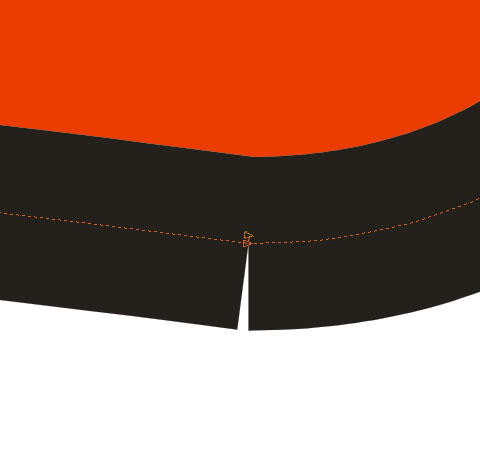
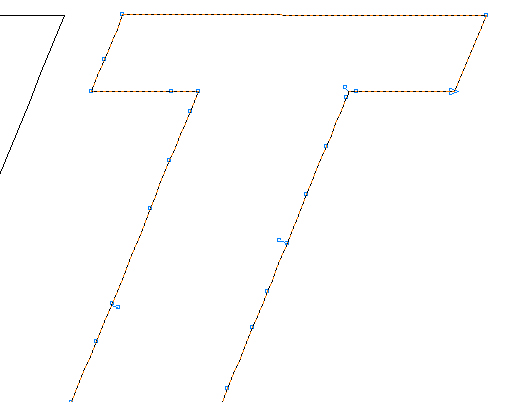

Контур букв с "надрезами" (подготовка к резке на плоттере)
3akoBblka / 12.07.2013, 13:21/13:31
Форум:
Версия программы:
15.1.0.486/488/489
Здравствуйте, я честно поискала на форуме и надеюсь, что не дублирую тему. Недавно работаю с плоттером (с Корелом давно), но за два месяца в первый раз сталкиваюсь с такой гадостью: после преобразования абриса в отдельный объект и объединения с буквами, новый объект приобретает такие вот "надрезы" на контуре. Макет делала не я. Конечно, можно это все почистить, но хочется знать, возможно ли предотвратить такой эффект и отчего он появляется. Помогите=)
Сталкиваюсь иногда с такой ерундой. Закономерность возникновения не отследил пока. А вообще эти риски появляются в местах разрыва контура. И для плоттера эти места нужно соединять.
Есть подозрение, что появление связано с разной направленностью векторов изначальной буквы и "обкурвенного" контура. Например, у буквы вектор по часовой направлен,, а у контура - против часовой.
Скорее всего дефект находится на контуре самого шрифта — ввиде двух-трёх рядом лежащих перекрученных узлов. Абрис только визуально увеличивает этот дефект. Попробуйте сначала сократить количество узлов на контуре шрифта, думаю дефекты уйдут, а потом задавайте абрис.
А может на контуре шрифта имеются разъединённые узлы....

Сергей, не "может", а - так и есть. "Прострелы" показанные на "рамочном" изображении появляются именно в местах разрывов контура. Вопрос лишь в том, почему эти разрывы возникают.
sergey, да, спасибо за совет, помогло. разрывов на контуре букв нет, но оказалось, что он перегружен узлами даже на прямых участках и многие из них развернуты перпендикулярно контуру - и итоге на конечном объекте не только "надрезы", но и куча мелких неровностей. что интересно, все это нашлось и на контурах других объектов в файле, а не только букв.
